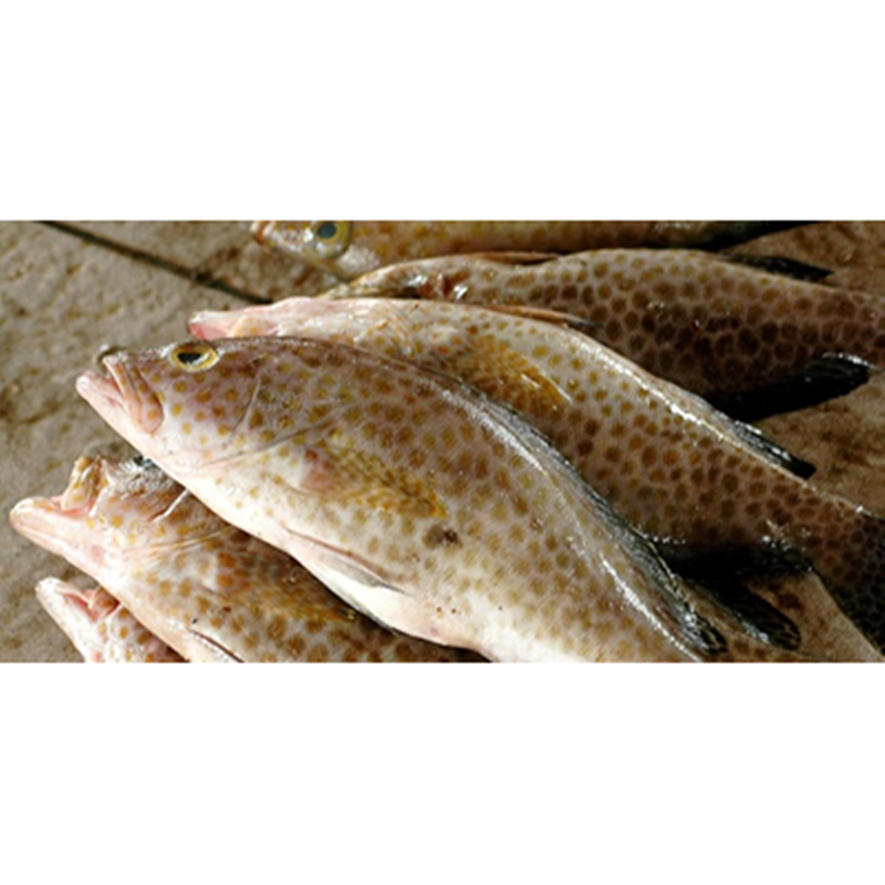

Ikan Kerapu
Ikan kerapu merupakan jenis ikan karnivora yang hidup disekitar terumbu karang dan dapat mengendalikan rantai makanan dengan menstabilkan keseimbangan ekosistem bawah laut. Selain itu, daging ikan karapu juga sangat diminati pecinta ikan karena rasanya yang lezat. Hal ini membuat ikan karapu dieksploitasi secara berlebihan sehingga populasi mereka semakin menurun pada tiap tahunnya. Ikan karapu akan memasuki kematangan produksi setelah mencapai 5 – 10 tahun yang menyebabkan populasi mereka rentan bertahan hidup dalam kurun waktu yang lama sebelum mencapai masa produksi. Untuk mengatasi permasalahan ini, maka budidaya ikan karapu perlu digiatkan lebih lanjut guna mencukupi permintaan pasar tanpa merusak ekosistem laut.
Habibat asli dari ikan karapu ini yakni di sekitar terumbu karang dan biasa berkamuflase melalui celah-celah terumbu karang untuk mengecoh mangsanya. Ikan karapu akan berenang pada sekitar terumbu karang dilautan tropis dan memangsa ikan kecil yang bergerak atau berenang aktif di air.
Kandungan Ikan Kerapu (dalam 100 gram)
| Protein (g) | Kalori (Kal) | Lemak (g) | Besi (mg) | Kalsium (mg) | Fosfor (mg) | Vit A (SI) | Vit B1 (mg) | Kolesterol (mg) | BDD (%) |
|---|---|---|---|---|---|---|---|---|---|
| 32,4 | 92 | 1,2 | 6 | 320 | 343 | 0 | 0,01 | 79,2 | 70 |
Manfaat Ikan Kerapu
- Meningkatkan fungsi otak dan kecerdasan
- Menurunkan kadar trigliserida dalam darah
- MMengurangi depresi
- Mengurangi kadar kolesterol LDL
- Mengurangi rasa nyeri
Kandungan asam amino esensial dan omega-3 pada ikan kerapu mampu meningkatkan fungsi otak anda dan membantu kecerdasan anak. Seperti manfaat ikan salmon, selain itu ikan kerapu juga dapat memberikan impls atau rangsangan agar otak lebih aktif dalam perkembangannya. Ikan kerapu juga sangat baik dikonsumsi oleh semua usia, terutama bagi anak-anak yang sedang dalam masa perkembangan tubuh dan otaknya.
Ikan kerapu juga mengandung zat DHA dan EPA yang memiliki manfaat sangat kompleks bagi tubuh. Salah satu mampu menurunkan kadar trigliserida dalam darah anda. Trigliserida merupakan lemak yang diproduksi tubuh karena adanya akumulasi glukosa dalam aliran darah.
Manfaat ikan kerapu lainnya adalah mampu mengurangi depresi yang di alami oleh seseorang. Penyakit depresi merupakan penyakit yang sangat menyakitkan karena dapat membuat tubuh mengalami rasa sakit akibat psikosomatis. Depresi juga dapat membuat seseorang menjadi tidak produktif, untuk itu mengonsumsi ikan kerapu dapat menjadi solusi yang tepat dalam mengurangi depresi yang anda derita.
Kolesterol LDL adalah kolesterol jahat yang ada di dalam tubuh manusia, ikan kerapu bermanfaat dalam mengurangi kadar kolesterol jahat yang ada di dalam darah. Lemak jahat LDL akan di basmi habis dengan kandungan lemak tak jenuh pada daging ikan kerapu. Untuk itu jangan meremehkan ikan yang satu ini.
Manfaat ikan kerapu lainnya adalah mampu mengurangi depresi yang di alami oleh seseorang. Penyakit depresi merupakan penyakit yang sangat menyakitkan karena dapat membuat tubuh mengalami rasa sakit akibat psikosomatis. Depresi juga dapat membuat seseorang menjadi tidak produktif, untuk itu mengonsumsi ikan kerapu dapat menjadi solusi yang tepat dalam mengurangi depresi yang anda derita.